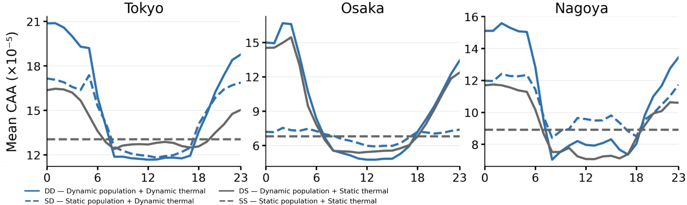
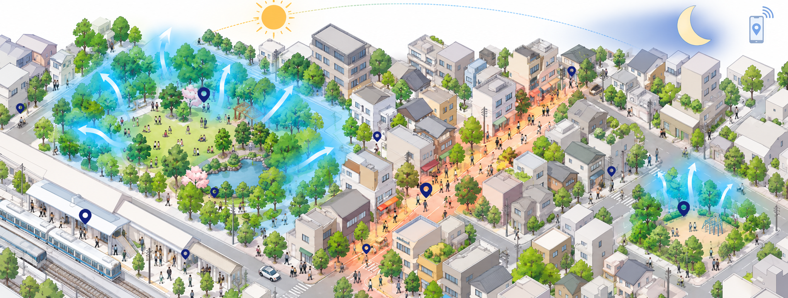

View full figureDynamic and Uneven Accessibility to Green Space Cooling in Japanese Metropolitan Cores
How does access to cooling change as people and thermal conditions shift through the day?
I integrate satellite observations and GPS-derived population estimates to examine hourly cooling accessibility across three cities.
Large-scale mobility data · Dynamic accessibility modelling · Cross-city comparison
First-author manuscript
Under review at npj Urban Sustainability
View details


View full figureFurther methodological details and research findings are available upon request.